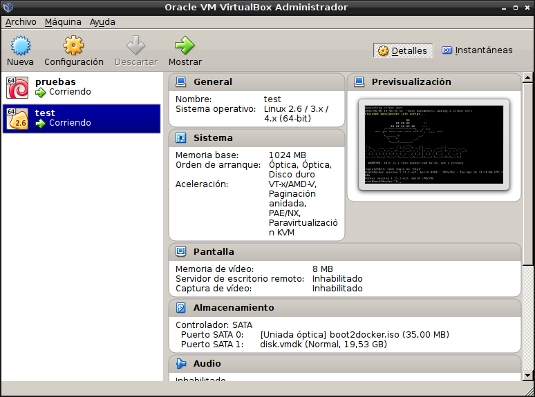
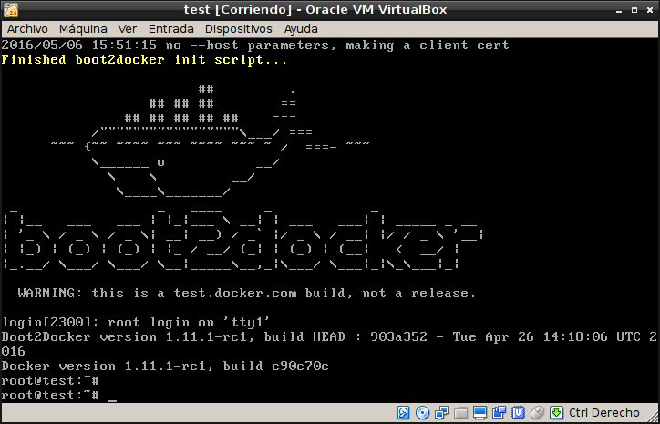
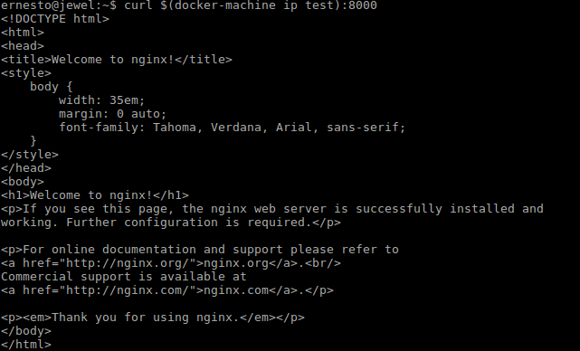

Uso de docker-machine.
Posted on Fri 06 May 2016 in Tutorial de Docker • 3 min read
Docker-machine se usa para equipos con Windows o MACOSX, o para equipos que no se le puede instalar docker (engine). Se usa como un cliente para un servidor docker.
Este artículo se basa en la documentación oficial en inglés que se encuentra en el siguiente enlace, y en el siguiente tutorial.
Los artículos anteriores sobre docker son:
-
Iniciando Django con docker usando docker-compose con postgresql como microservicio.
-
Crear un entorno de Integración y Despligue continue con Docker para node.js.
-
Ejecutar una prueba de unittest en Python con un contenedor Docker.
-
Montar una Plataforma como servicio (PaaS) con Dokku (docker).
Para probar el uso de docker-machine, se tiene una máquina virtual con IP 192.168.1.102 donde se tiene unas imagenes de docker, y un equipo donde se instalará el docker-machine (qué será mí equipo local).
En el equipo se instalará docker-machine de la siguiente manera:
#curl -L https://github.com/docker/machine/releases/download/v0.4.0/docker-machine_linux-amd64 > /usr/local/bin/docker-machine
#chmod a+x /usr/local/bin/docker-machine
Para probar que funciona se ejecuta la versión de docker-machine:
#docker-machine -v
docker-machine version 0.4.0 (9d0dc7a)
Crear un docker-machine en virtualbox:
$ docker-machine create --driver virtualbox test
En este caso se crea un contenedor docker que se conecta a virtualbox llamado test.
A continuación se muestra la salida del comando anterior:

Como lo muestra la imagen, se crea el docker test, se baja una imagen iso llamada boot2docker.
En la siguiente imagen se muestra a virtualbox con la máquina virtual test:

Al acceder a la máquina virtual desde virtualbox se tiene lo siguiente:

Para ver como se conecta a la máquina se ejecuta el siguiente comando:
$docker-machine env test
export DOCKER_TLS_VERIFY="1"
export DOCKER_HOST="tcp://192.168.99.100:2376"
export DOCKER_CERT_PATH="/home/ernesto/.docker/machine/machines/test"
export DOCKER_MACHINE_NAME="test"
## Run this command to configure your shell:
## eval "$(docker-machine env test)"
Para configurar el shell se ejecuta el siguiente comando:
eval "$(docker-machine env test)"
Para listar las máquinas se ejecuta el siguiente comando:
docker-machine ls
NAME ACTIVE DRIVER STATE URL SWARM
test * virtualbox Running tcp://192.168.99.100:2376
Para ver la IP que está usando test se ejecuta:
$ docker-machine ip test
192.168.99.100
Correr un servidor nginx en el puerto 8000 en un contenedor:
docker run -d -p 8000:80 nginx
Para ver el servidor se ejecuta el siguiente comando:
curl $(docker-machine ip test):8000
Y el resultado es:

Para terminar se detiene el docker-machine y se elimina:
$docker-machine stop test
$ernesto@jewel:~$ docker-machine rm test
Successfully removed test
¡Haz tu donativo! Si te gustó el artículo puedes realizar un donativo con Bitcoin (BTC) usando la billetera digital de tu preferencia a la siguiente dirección: 17MtNybhdkA9GV3UNS6BTwPcuhjXoPrSzV
O Escaneando el código QR desde la billetera: